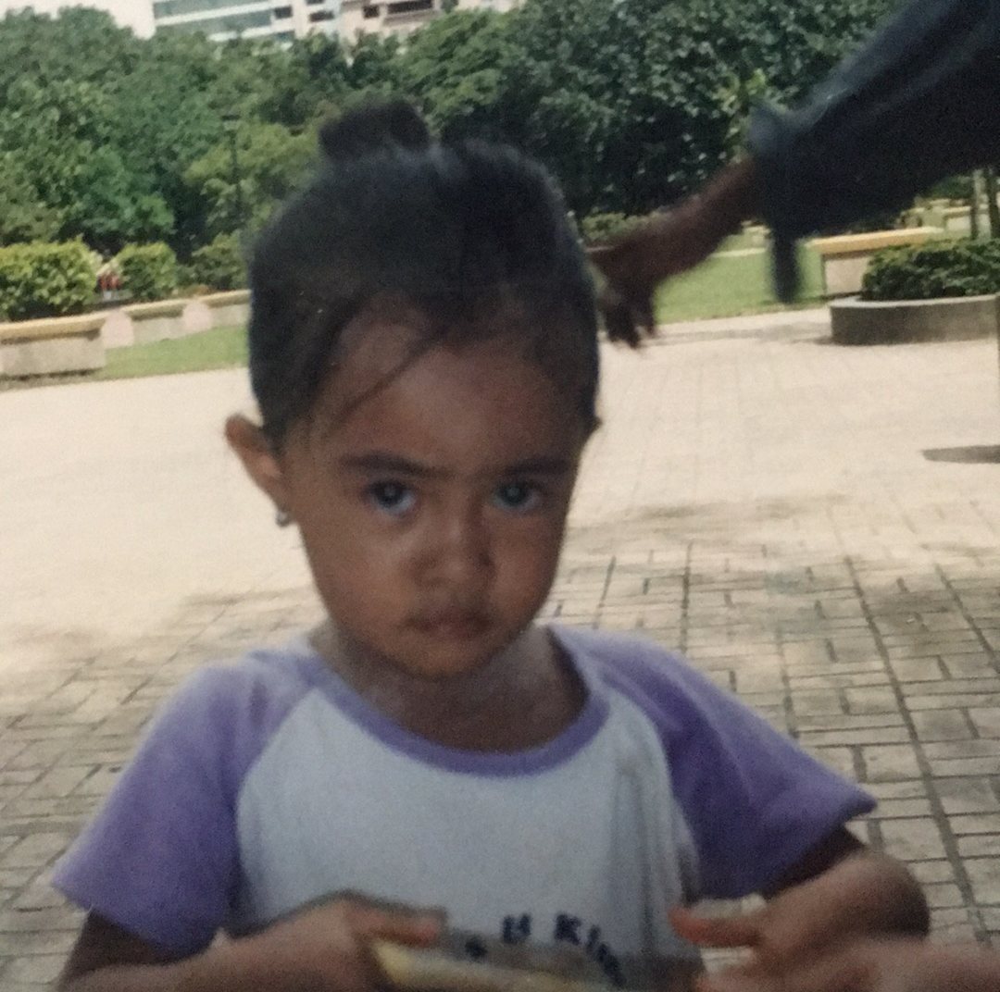
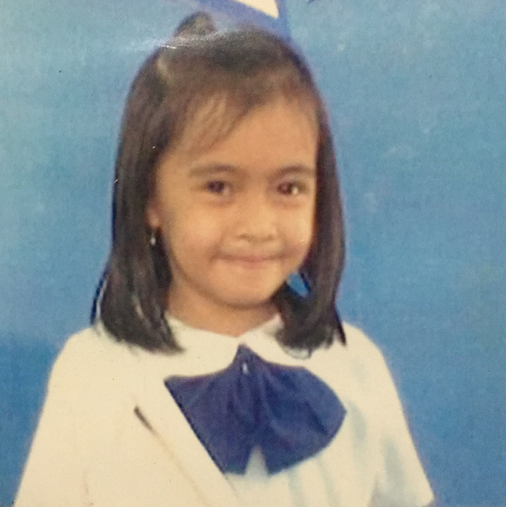
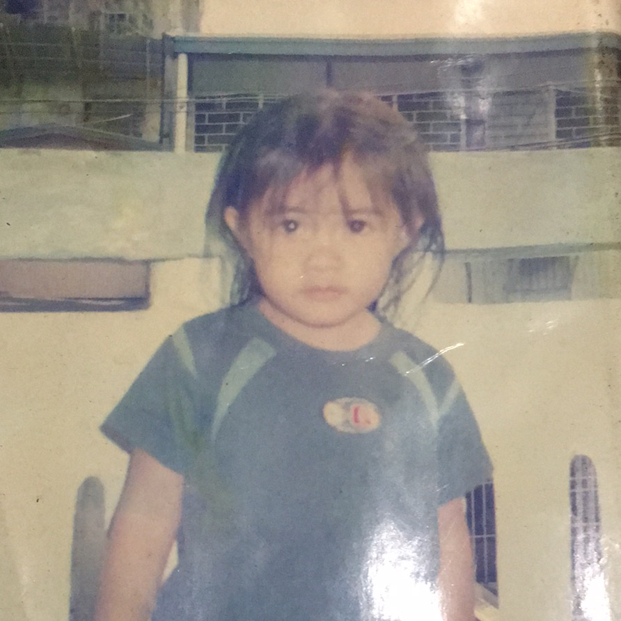
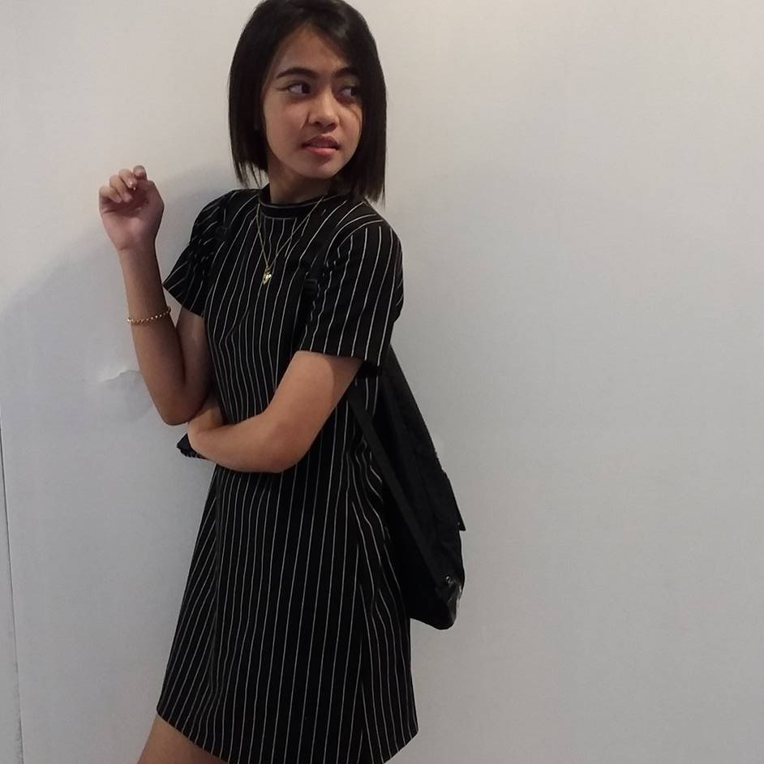
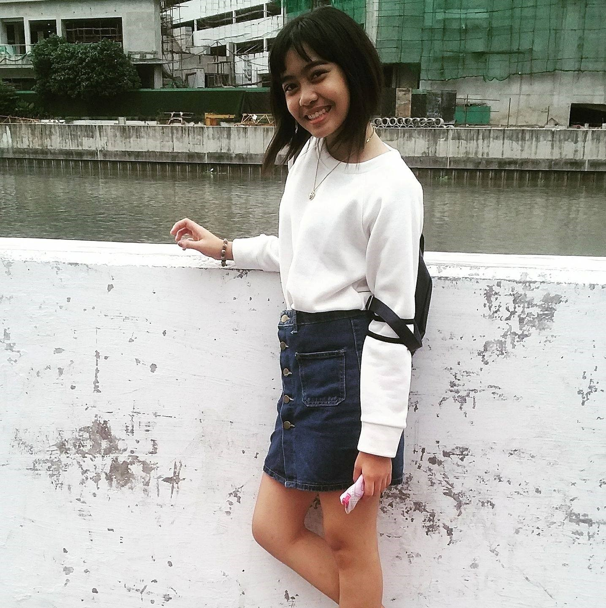
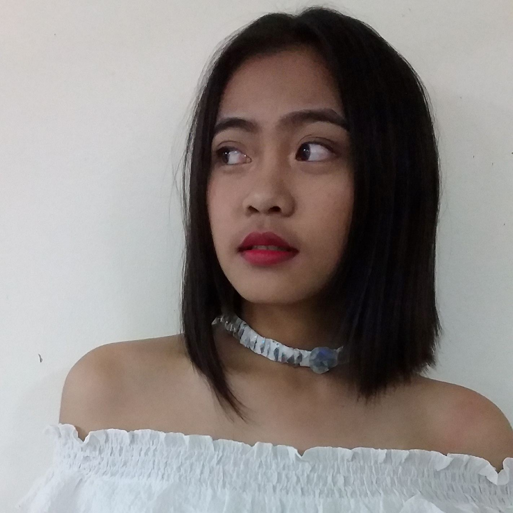
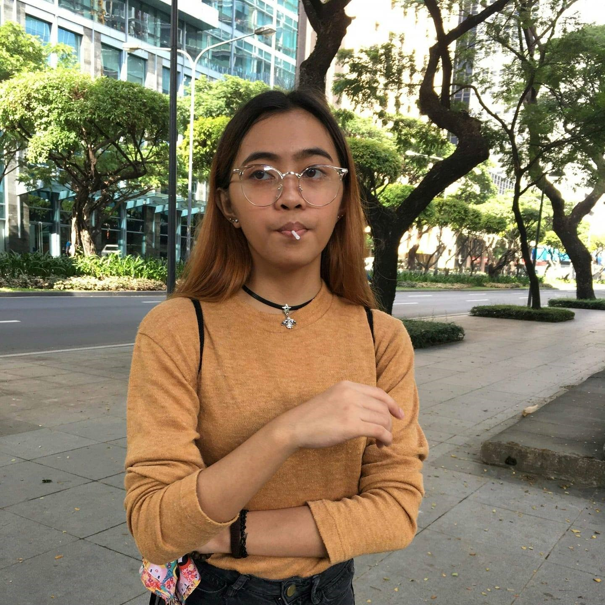
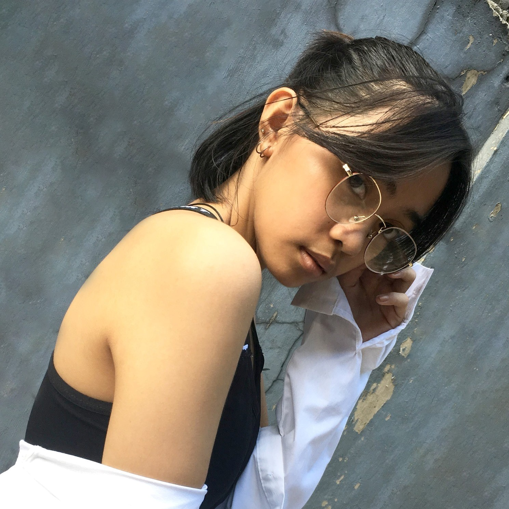
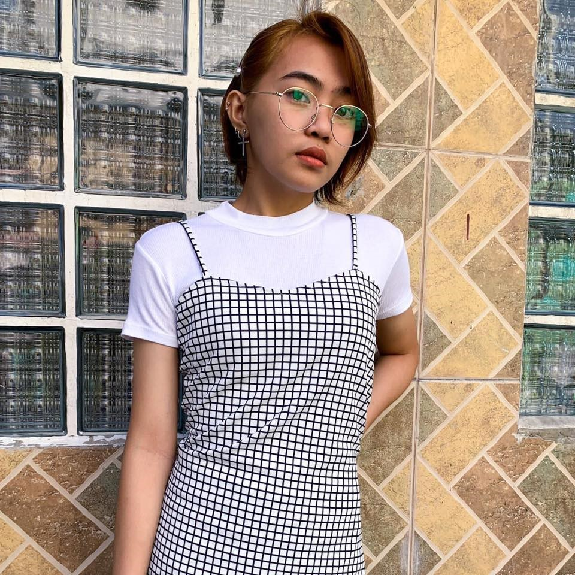

ABOUT ME
MICHELLE ANN REYES
MY CHILDHOOD



I am Michelle Ann Reyes.1 I will tell you what kind of my childhood years like.2
I have siblings, an older sister, and a younger brother, the one that is taking care of us are our grandparents, uncles,
and auntie.3 My uncles and Auntie are the ones that pay our school fees.4 I go to a private school
named Paco Catholic School, prep until grade 6.5 When I was in prep, I recall that I receive a slap from my
teacher.6 Maybe, that one of the reasons I am scared of reciting and answering the teacher or the professor.
7 I do not remember what I did to receive that slap, but maybe I said something awful to him. 8
I never told my mother what happened.9 She asks me back then what happened, since I was crying, but did not say
anything.10 However, one of my classmates told my mother what happened, and I remember my mother was furious
about it, and she also told my uncles about it.11 One of my uncles got mad at me for not saying anything, and
they go to school to talk to the principal.12 They also request my transfer of section.13Since then,
I sometimes perfect my test.14 When I was finally a grade school student, I remember playing with my classmate
after class since our mother/father are not yet there for us.15 We sometimes try to go out of school to buy a
scented eraser but, the guard always stopped us from leaving.16When I was in grade 2, my grandfather is the one
that sent us to school and the one that takes us home since my mother left us and had her own family, my father also had his
own family.17 Then when I was in grade 3, I started to commute by myself, but since then, I started neglecting
all my school works.18 I failed some subjects, because of that, I needed to have a remedial class.19
Until I was in grade 6, I never get serious about my school.20
Go Top
MY TEENAGE



My Teenage years are messier than my
childhood.1 I request to be enrolled in a public school since I donot want to bother my auntie and uncles about
my school fees since my sister already in college.2 In this High school, I learned to cut classes, drink, and
fight.3 When I started high school, I'm scared because it will be my first time in public school.4
Public schools had many rumors surrounding them such, as students, there are always fighting, they're so many fraternities.
5 In my first year, everything is going well for me.6 It was fun until I was surrounded, by friends
that everything changes. 7 I learned how to drink when I was in the first year with the friends I made.
8 I also learned how to cut classes with them.9We always cause trouble to the guards.10
Sometimes, we will be in the guidance office because of it.11 Then in my second year, I had a friend that is in a
fraternity, and she always told me what they are doing.12 She always assures me that nobody in her fraternity
will bother me just because I friended her.13 Then there is a time that I bump into a girl, and that girl makes a
big deal out of it and got angry.14She called her friends and started to say things, and of course, I don't want
someone belittling me and pushing me around so, I fought back to them, and we all ended up in the guidance office because
of my friend.15 I thanked her because if it's not for her those people, will start to do physical fights.
16 Then, in my third year, I finally find friends, which makes me realize how important life and study.
17 Since then, I started to take my school seriously.18 I don't cut anymore.19 Then in my
fourth year, I finally realize what mistake I did, in the past and what I had done.20
Go Top
MY COLLEGE



My college year is like a rollercoaster.
1 Sometimes it was fun but, sometimes it's frustrating.2 If it's not on the k12, maybe I'm already a
graduating student.3 I took a STEM on my SHS since I wanted to be an architect or surgeon, but I realize that I
wanted to help my grandmother, uncles, and auntie as soon as possible.4 I plan to finish my study, and I plan to
save money before going back to college and finally take what I wanted.5 I take IT because they said that it was
easy, but in reality, it's not.6 I cried a lot when the deadline is near, and my codes still have errors.
7 I always thanked that I have a friend that always there to help me when I needed it the most.8 They
said that they will help me as much as they could, help me until I can finally make it.9 Sometimes I felt that I
was a bother to them.10 My friends and I always go somewhere, an adventure.11 Sometimes we will go to
play billiards after classes, sometimes one of my friends will take us somewhere just for us to eat.12 We
sometimes go on road-trip.13 It was fun and enjoyable it, makes us relax when we are having a hard time at school.
14 We planned to go to one of our friend's province, but it never happened, because of the pandemic.15
Because of this pandemic, we couldn't seeeach other, but it for our sake anyways.16 What we planned was for us to
be together and to graduate together at the same time.17 However, one of us can't enroll.18 But, we
assure her that no matter what happened, we will be in there with her.19 We also promise each other that we will
achieve our dreams.20
Go Top